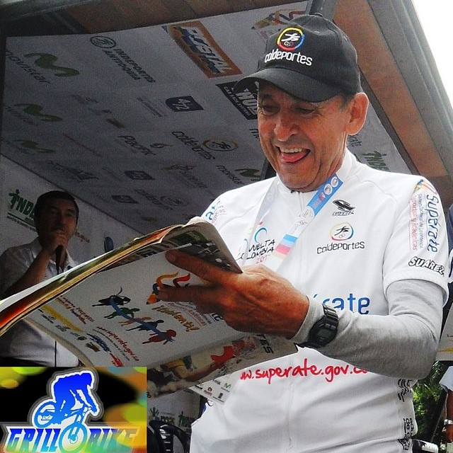
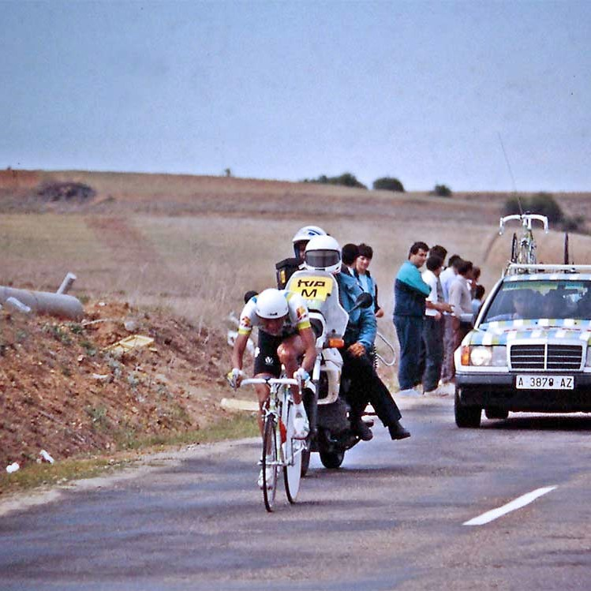

Ciclista de Boyacá consagrado en Europa. Campeón del Giro de Italia 2014. En el Tour de Francia 2013 consiguió el subcampeonato, además de convertirse en el mejor juvenil de la competencia y lograr la clasificación de la montaña.
Repitió el segundo lugar en el Tour de 2015, siendo también campeón de los jóvenes.
Mariana Pajon
Antioqueña. Medallista de oro en los Juegos Olímpicos de Londres 2012, primer galardón olímpico en su cuenta personal y segundo oro de toda la historia olímpica colombiana. Por haber sido medallista en los Juegos, el Gobierno colombiano la condecoró con la Cruz de Boyacá. También es campeona mundial de BMX.
Fernando Gaviria
Desde 2012, Gaviria acumula medallas de oro en pista en campeonatos mundiales juveniles, juegos panamericanos (mayores y juveniles), juegos sudamericanos, copas del mundo y campeón mundial élite del Omnium en 2015 y 2016. Ganador de etapas en ciclismo de ruta, superando en ocasiones al gran Mark Cavendish.
Rigoberto Uran
Antioqueño. Sus logros más destacados han sido la medalla de plata en los Juegos Olímpicos de Londres 2012 en la prueba de ciclismo en ruta y la segunda posición en el Giro de Italia 2013 y 2014. Destaca principalmente como escalador, pero también ha mejorado mucho en los últimos años en las pruebas de contrarreloj.
Esteban Chaves
Ciclista bogotano. En el 2011 defendiendo a la Selección de Colombia ganó el Tour del Porvenir. En 2015 consiguió dos
etapas en La Vuelta a España, dejandolo quinto en la clasificación general final. Al final del año, consiguió quedarse con el campeonato del Tour de Abu Dhabi, por encima de Fabio Aru y Alejandro Valverde.
Julian Arredondo
Fue el número uno del UCI Asia Tour en 2013. En su primera temporada con el equipo Trek, en 2014, consiguió sus victorias más importante hasta el momento, al ganar la etapa número 18 del Giro de Italia en una ascensión final al Panarotta, para proclamarse posteriormente ganador final de la clasificación de la montaña del Giro.
Los que abrieron el camino...

Cochise Rodríguez
Se destacó en las pruebas en pista, siendo campeón del mundo en 4.000 metros persecución individual en Varase, Italia (1971). También fue campeón en los juegos panamericanos de 1967 y 1971.

Fabio Parra
Primer latinoamericano en estar en un podio del Tour de Francia (fue tercero en 1988). Fue el mejor joven en el Tour de Francia y La Vuelta a España en 1985.
Lucho Herrera
Apodado El jardinerito de Fusagasugá fue campeón de la clasificación de la montaña en las tres grandes vueltas (Tour, Giro y Vuelta) y ganó la Vuelta a España en 1987.
Los iconos presentes en este sitio web son propiedad de Icons8. Icon pack by Icons8.